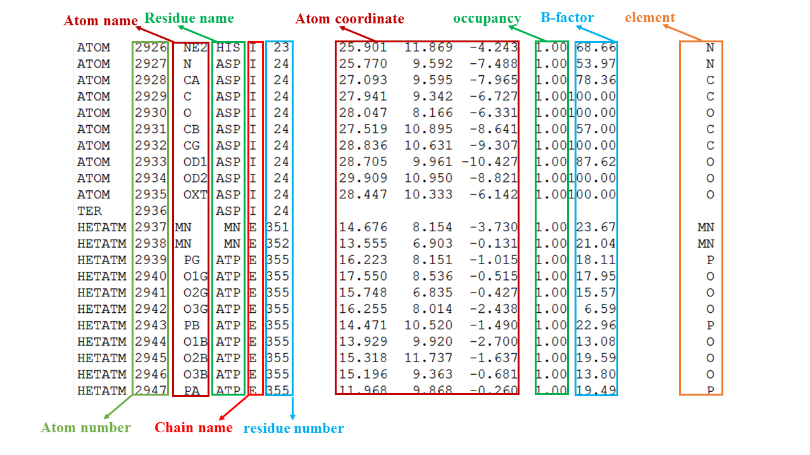
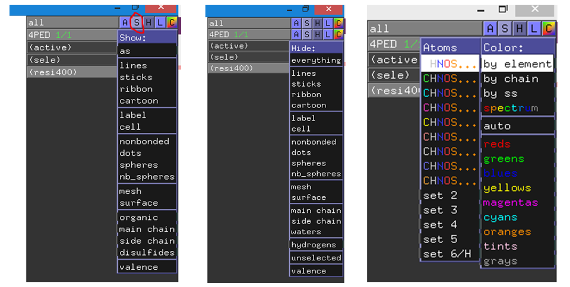
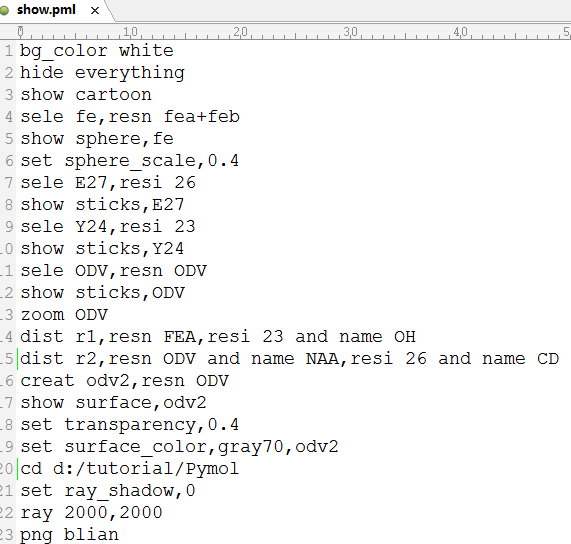

PyMol常用命令
PyMol可以作出非常漂亮的蛋白质结构图，是一款很好用的画蛋白图像的软件。我在这里总结了PyMol的一些常用命令。
PDB文件一览
- 
- 从左至右，依次有原子编号，原子名，残基名，链名，残基号，原子坐标，occupancy，B-factor，元素名，segment name；
GUI操作
- 鼠标左键：rotate；中键：move；右键：zoom；
- file >> save session, 保存文件为pse或psw格式，可保存设置的各种效果，但无法再编辑；
- H>>hydrogens>>all/nonpolar #隐藏所有/非极性氢原子；
- 选定原子后，鼠标点击S可改变显示模式，H可隐藏显示模式，C可改变显示颜色
命令行操作
主要包括选择命令、显示/隐藏命令、颜色命令、标签命令、设置命令、图像输出设置命令等。
select命令
select 变量名,选择的原子 #变量名可以是任意的字母或数字组合,select命令可简写为sele;
如何选择原子呢？属性选择符有segi（segment），chain（链），resn（残基名），resi（残基号），name（原子名），symbol（元素符号）。逻辑运算符有 and 或者 & （和）、or （或）、not（非）。
1 | select ligand,segi lig ##选择segment为lig的所有原子，赋给变量ligand； |
另外还有稍复杂点的运算符 around，expand，within x of ，byres ，neighbor；
1 | select coor,name fe around 4 #选择铁原子周围4埃内的所有原子（不包括铁原子）；s1 around x； |
show命令：显示一种或多种模式
show 显示形式，变量 #也可以不用提前创建变量，直接在这里选择原子`
常用显示形式有lines，sticks，cartoon，ribbon，sphere，surface，mesh
1 | show sticks,Y24 #显示变量为Y24的所有原子为棍棒形； |
hide命令：操作同show
由于PyMol没有撤销命令，显示命令操作后无法撤销，若之前操作将Y24显示为棍形，现在又不想显示它，可以输入命令hide sticks,Y24
color命令：着色
color 颜色，变量
1 | color green #整个蛋白着色为绿色； |
label命令
label [selection,[expression]] #selection为选择的原子或对应的变量名，expression为显示的标签文字；
1 | label resi 24 and name OH,"T24" #在24号残基的OH原子附近标记为T24； |
标签设置
1 | set label_color,color_name,selection #设置标签颜色 |
添加或删除键
1 | bond atom1,atom2 #可提前定义变量atom1和atom2，也可以在这里直接输入选择； |
虚键设置
1 | set dash_length,0.015 #每截虚线的长度 |
叠合命令Align
align source,target #source对象会被移动旋转来叠合到target对象上；
1 | Align mol1 & resi N1, mol2 & resi N2 #按某一个残基叠合； |
对整个蛋白叠合：鼠标操作：A>>align>>to molecule>>mol2
保存之图片输出
1 | set ray_shadows,0 #渲染时不显示投影； |
动画视频制作
1 | load xxx.top,mov,format=top ##pymol要求载入轨迹前要先载入拓扑文件，除非后缀是top，后缀是prmtop的话除非定义一下格式，否则是不认的 |
命令集成
有时我们需要对同一研究体系不同构象作图像显示，或经常打开某一pdb文件，每次输入命令总是太麻烦，为节省时间，可以将所有要操作的命令写到文本文件name.pml中，然后在PyMol命令框中输入@name.pml，就可以执行文本中的命令。
